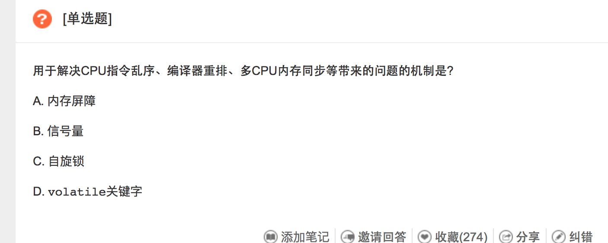

|
|
☰ 目录
20180429 CPU指令乱序 编译器重排 多CPU内存同步等带来的问题机制 内存屏障,也称内存栅栏，内存栅障，屏障指令等， 是一类同步屏障指令，使得CPU或编译器在对内存随机访问的操作中的一个同步点，使得此点之前的所有读写操作都执行后才可以开始执行此点之后的操作。 大多数现代计算机为了提高性能而采取乱序执行，这使得内存屏障成为必须。 语义上，内存屏障之前的所有写操作都要写入内存；内存屏障之后的读操作都可以获得同步屏障之前的写操作的结果。因此，对于敏感的程序块，写操作之后、读操作之前可以插入内存屏障。 内存屏障可以限制CPU对内存的访问，表现在高级编程语言中就是加锁 https://www.nowcoder.com/questionTerminal/875cb8ffb1234ba99e90b53136fd107c?orderByHotValue=1&done=0&pos=57&mutiTagIds=610&onlyReference=false 内存屏障，在x86 上是”sfence”指令，强迫所有的、在屏障指令之前的 存储指令在屏障以前发生，并且让 store buffers 刷新到发布这个指令的 CPU cache。这将使程序状态对其他 CPU 可见，这样，如果需要它们可以对它做出响应。 编译器不仅仅会乱序，还会展开，合并，移除代码（如果发现代码没有用到），，，， C语言不错了，C++编译器经常编译出连上帝都不认识的结果出来。 原文： https://www.zhihu.com/question/23261395 我从硬件的角度试着来分析一下。
数据的竞争与冒险
乱序执行 多线程 基于编译器的静态优化（总结） /******第一章：流水线暂停******/ Q:流水线暂停是什么？ A:（此处应该有两张图） 在正常情况下，流水线的五级分别执行着五条指令的不同阶段，就像这样。但是会有某些原因导致CPU不得不去等待一些事情处理完成才能继续进行工作，此时，五级之间的流水线寄存器会保存流水线当前的工作状态直到流水线暂停结束。（CS应该也会学数电吧……）就像D触发器一样，时钟一直给，暂停期间相当于关闭使能，暂停结束给使能信号，输入信号又能愉快的流向输出了。
众所周知，存储器的速度是要低于处理器的速度的。所以当CPU想要从内存中读取或写入数据时，内存说：“我还没有准备好！”（向CPU发送未完成信号），CPU干瞪眼，CD没到即使满蓝也放不出来技能啊。于是就只能暂停（等效于插入no operate指令）等了。 /不能放在这/
这里需要先给一个概念，就是分支指令要在执行阶段（第三个阶段）才能得出是否要跳转和跳转的目标地址，而此时（指令存储地址意义上的）下一条指令已经在译码阶段了，下下条指令刚把指令码拿出来。按照我（应该也是绝大多数人）写汇编的习惯，下一条指令是不跳转分支的指令，跳转分支的指令存在另一个遥远的地方。但是如果万一跳转了呢……这两个时钟周期就白白浪费掉了啊。那有什么办法……这两条指令作废（相当于变为NOP指令），重新从跳转目标地址取指令重新运行吧（此所谓“刷流水线”是也）。
现代CPU为了弥补CPU与内存间的速度差距，加了一种叫Cache的东西（L1，L2，L3；位于CPU芯片内部，速度显然比内存快得多，但是容量很小），就是把CPU看起来常用的东西在Cache中保留一份镜像，需要用到该数据时直接在Cache中读取就好，速度比内存快个几十倍吧。
好，我们开始走一下蒙答案的流程。首先，这道题以前见过没有？（根据历史分支猜测当前分支结果）什么？你们都没有错题本的么？【历史分支记录表，分为 全科（全局历史记录，每一条分支的记录都保存在一起） 和 单科（一张表只记录该条指令或者该类指令的分支历史）】 OK，通过查表，我们大概有八成的把握这道题选A（跳转的正确率为80%）。那就选A吧！
目前看起来
另一段代码 ADD S6,S0,S8 SUB S8,S10,S14 还是在乱序处理器中，我们必须保证SUB不能在ADD取得操作数之前给出结果，否则指令顺序就会变成SUB,ADD。这是WAR冒险。
讲道理的话，数据冒险是完全可以消除的，不必也不能通过编译器优化解决，权当做写“为什么这一段不能变换指令顺序”吧。 注意与名称冒险的区别。名称冒险是两条指令没有数据流动，数据冒险是两条指令间有数据流动。
对于任意寄存器或存储器地址，前一条指令要写，后一条指令要读前一条指令的写入的结果。显然这两条指令的顺序不能交换。后面两个情况可以类比。
（此处应该有图） Q:什么是乱序执行？ A:刚才我们举过一个除法的栗子。两条除法指令之间可以插入其他的指令，但是这需要硬件支持，简单地讲就是需要多个ALU（逻辑运算单元？忘记怎么翻译了，总之就是CPU里面算数的那个东西），或者把ALU拆开，有多个加法器，乘法器，除法器这样的。乱序的执行过程是：顺序取指，乱序执行，顺序提交。 顺序decode出来，（接下来每一个逗号是一个时钟周期）把除法指令A扔到除法器A，把除法指令B扔到除法器B（现在两条除法指令都在除法器里跑循环），把无关的加法指令A扔到加法器A（除法指令仍然在跑循环），加法器A得到结果并把结果放到结果保留站，除法器A得到结果，保留站中的加法结果A被提交（假设这里没有相关，允许直接提交），除法结果A提交，除法结果B提交。 可以看到，输入的指令顺序是：DIV,DIV,ADD；但是输出的指令顺序是：ADD;DIV;DIV。 Q:说好的WAW和WAR冒险解决方案呢？ A:乱序执行再乱也是要按照基本法的，这个基本法叫Tomasulo算法，在解决WAW和WAR冒险方面，它采用了寄存器重命名这种方案，上面说的那两段代码其实是《量化》乱序执行那一节的部分示例，原文如下 这段代码直接给出了WAW,WAR两种冒险（真数据相关就不说了），解决方案就是引入两个新的寄存器S和T，对这一段代码进行改写 这些完全可以由编译器静态完成，直接看的话可能看不出来，毕竟它只改了寄存器名称。 关于Tomasulo算法的更多信息，请参阅Tomasulo algorithm 这里只是给了一个最简单的乱序执行栗子，扩展阅读请参阅 Out-of-order execution
讲道理的话，这一部分我很可能写不好，学得不够扎实。 那就鸽了吧（微笑脸） Simultaneous multithreading 吓得我扔个wiki链接赶紧跑。
上述内容有一些是在runtime完成的，但更多的还是在编译阶段就可以发现的冒险或者其他影响性能的东西，一个好的编译器，必然需要能够识别出哪些代码可能影响性能，并进行优化，这就是为什么C和汇编的指令顺序会有区别。 两次写隔了好久……自控和电力电子挂了实在不开心…… 大概想不起来其他的了吧。如果还有没涉及到的地方，请指明！ 不是按顺序执行，优化器会根据具体硬件来打乱顺序，优化性能。而且如果你学了编译器就会知道，这件事情并不神。 是的，确实很神，还有很多更神的优化。 我们比较熟悉的有除法优化为乘法之类的。不熟悉的就多了，大多见到这些代码都不知道这是优化，一下子能想起来的有这几种。为了更高效的利用UV流水线而故意挪动指令顺序。为了减少数据冲突或者指令冲突而故意挪动指令顺序。为了减少AGI（Address Generation Interlock）冲突而挪动指令顺序以及生成一些看起来有些奇怪的汇编代码。 CSAPP里有说啊，开了编译器优化后会有时产生乱序，目的是减少存储器读写等等 out of order execution. 加mem barrier 【缓存屏障】可以阻止 编译器不仅仅会乱序，还会展开，合并，移除代码（如果发现代码没有用到），，，， C语言不错了，C++编译器经常编译出连上帝都不认识的结果出来。 |